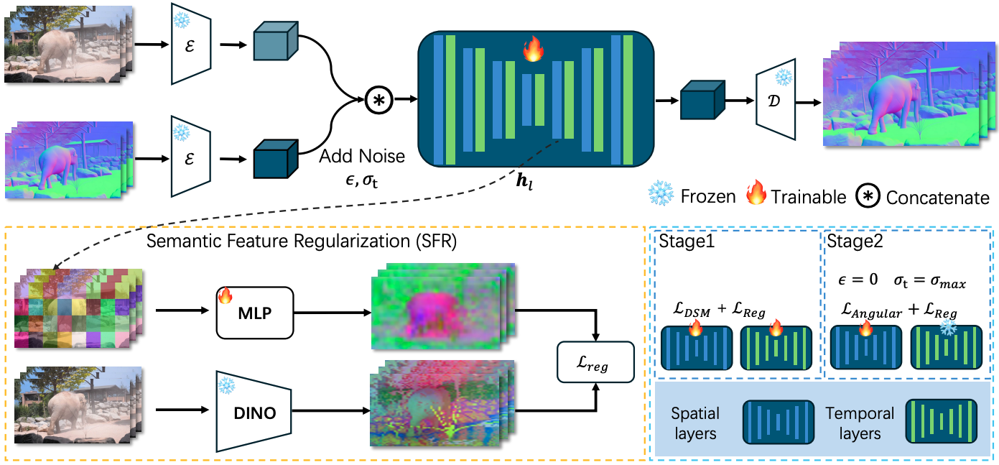

Abstract.
Surface normal estimation serves as a cornerstone for a spectrum of computer vision applications.
While numerous efforts have been devoted to static image scenarios, ensuring temporal coherence
in video-based normal estimation remains a formidable challenge.
Instead of merely augmenting existing methods with temporal components, we present NormalCrafter
to leverage the inherent temporal priors of video diffusion models.
To secure high-fidelity normal estimation across sequences, we propose
Semantic Feature Regularization (SFR), which aligns diffusion features with semantic cues,
encouraging the model to concentrate on the intrinsic semantics of the scene.
Moreover, we introduce a two-stage training protocol that leverages both latent and pixel space
learning to preserve spatial accuracy while maintaining long temporal context.
Extensive evaluations demonstrate the efficacy of our method, showcasing a superior performance
in generating temporally consistent normal sequences with intricate details from diverse videos.

Overview.
We model the video normal estimation task with a video diffusion model conditioned on input
RGB frames.
We propose Semantic Feature Regularization (SFR) L
reg to align the diffusion features with robust
semantic representations from DINO encoder, encouraging the model to concentrate on the
intrinsic semantics for accurate and detailed normal estimation.
Our training protocol consists of two stages: 1. training the entire U-Net in the latent space
with diffusion score matching L
DSM and SFR L
reg; 2. fine-tuning only the spatial layers in pixel
space with angular loss L
angular and SFR L
reg.